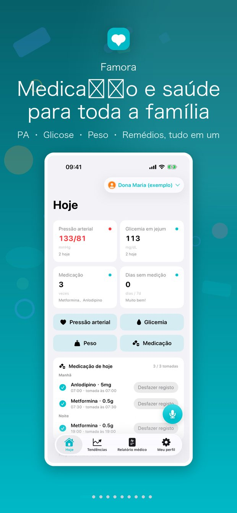
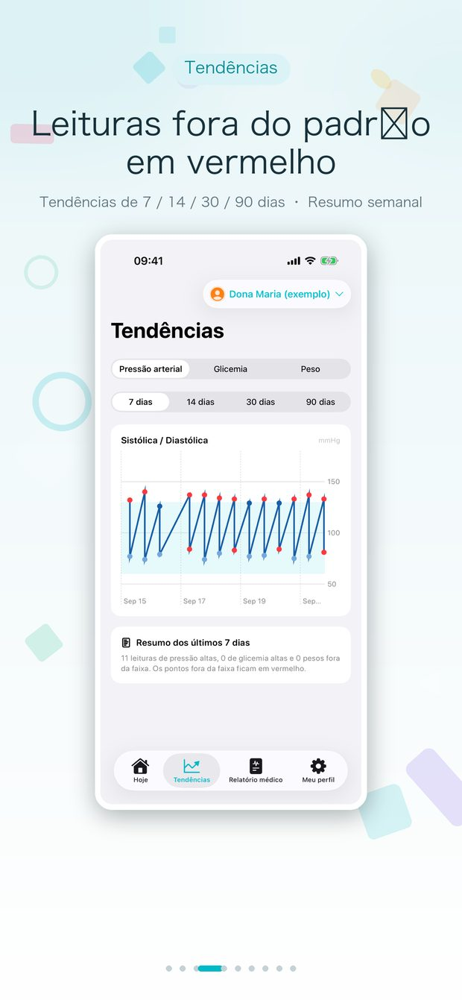
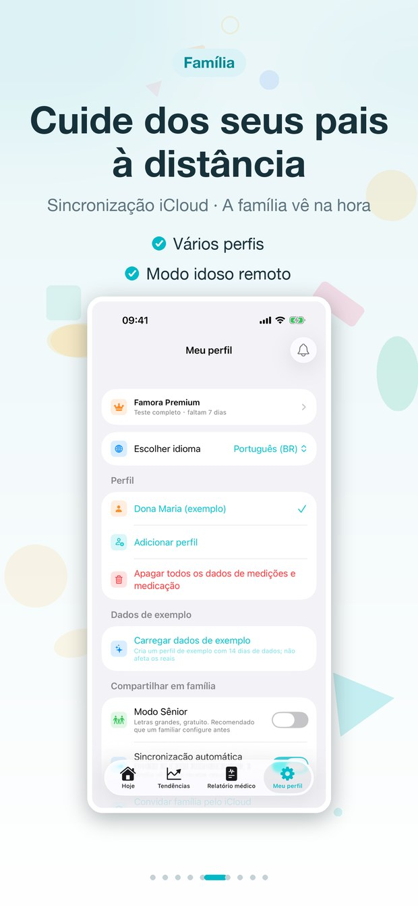
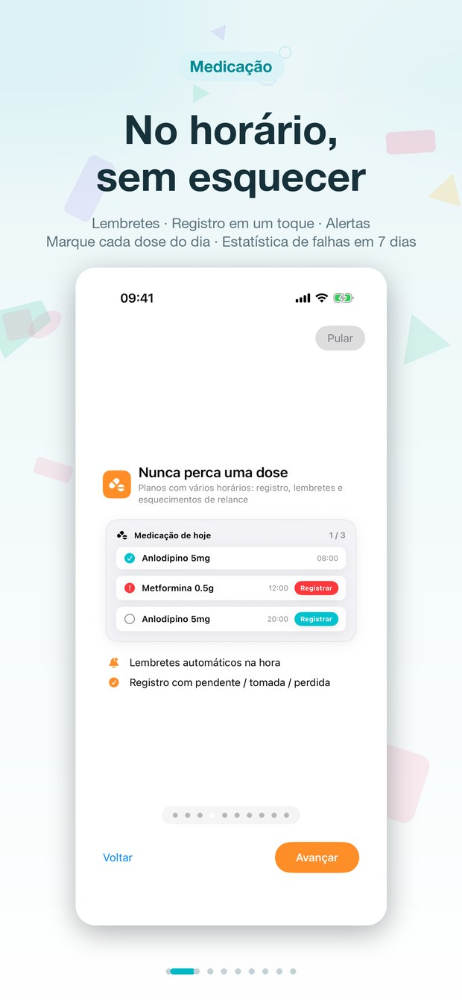
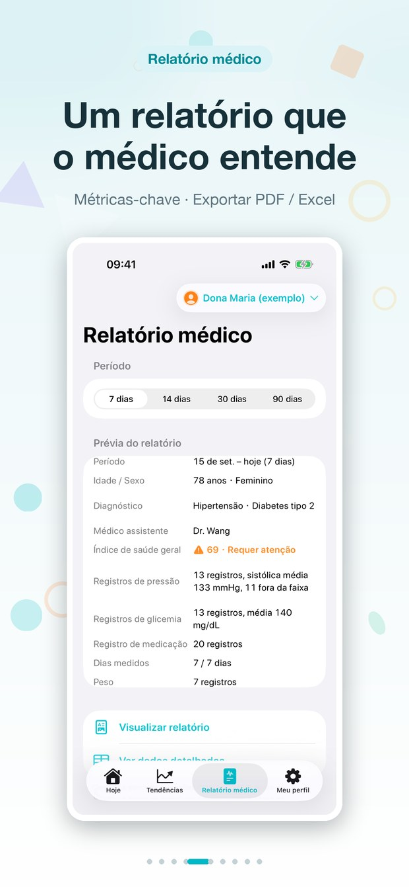
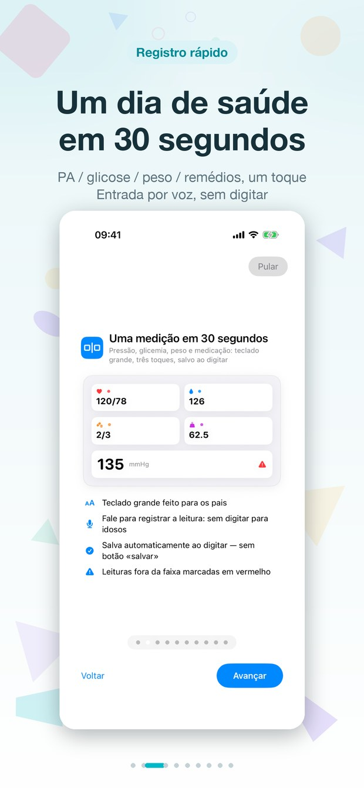

Pressão · Glicose · Peso · Medicação — um diário de saúde fácil para os mais velhos e claro para a família.



Registre as medições, não perca nenhuma dose e compartilhe um relatório pronto para o médico em segundos.
Pressão, glicose e peso do dia com cores de status claras: uma tela, nada escondido.
Tendências de 14/30/90 dias para cada medida: perceba mudanças antes que virem problemas.

Horários diários com registro e taxas de adesão; doses esquecidas aparecem de imediato.

Relatórios PDF de 14/30/90 dias prontos para o médico, além de exportação de dados em Excel: compartilhe com médicos e família.

Registre um dia inteiro em 30 segundos: pressão, glicose, peso e medicação com um toque, com entrada por voz.
As medições vão para o iCloud automaticamente: a família vê os números mais recentes ao abrir o app.
Para os pais, um diário simples; para a família, um painel claro.
Sem sincronização manual: as novas medições chegam sozinhas à família.
Os familiares recebem um resumo diário: leituras do dia, doses registradas e o que merece atenção.
Só avisa à noite se a medição do dia ainda não foi feita; mediu, não perturba.
Registre medições direto do pulso, com complicações para consultas rápidas.
Um perfil independente por familiar, cada um com seus dados, tendências e relatórios.
Sem conta, sem servidor, sem anúncios. Tudo vive apenas no seu banco de dados privado do iCloud.
Tudo o que você quer saber sobre dados, contas e compras.